The Warlord
Village Gate
Slow and very heavy. Every hard hit still counts, so keep shooting.
Enemy coins march down a carom board toward your gate. Your striker is the only thing that stops them: flick it, bank it off the rails and sink them in the pockets. Five folk-art bosses wait at the end of five boards, and each fight lasts about a minute and a half.
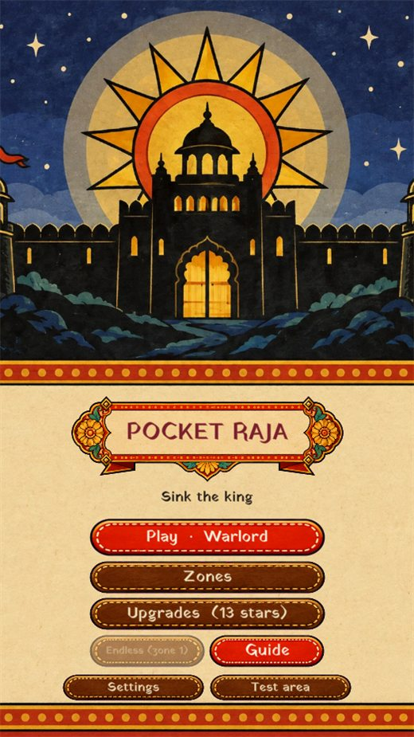
Mouse or touch: press the baseline, slide, pull back, let go.
Placing the striker, aiming it and hitting are a single drag. No buttons to learn, nothing to read.
Touch the baseline at the bottom of the board and slide: the striker follows your finger and parks where you want it.
Without lifting, pull the finger back. The pull is the power, a dashed guide shows the shot (bounces included) and the whole board slows down so you can line it up.
Release to hit. Knock coins into a pocket, chain several from one flick for more points and a little health, and park in a boss's red lane to block it.
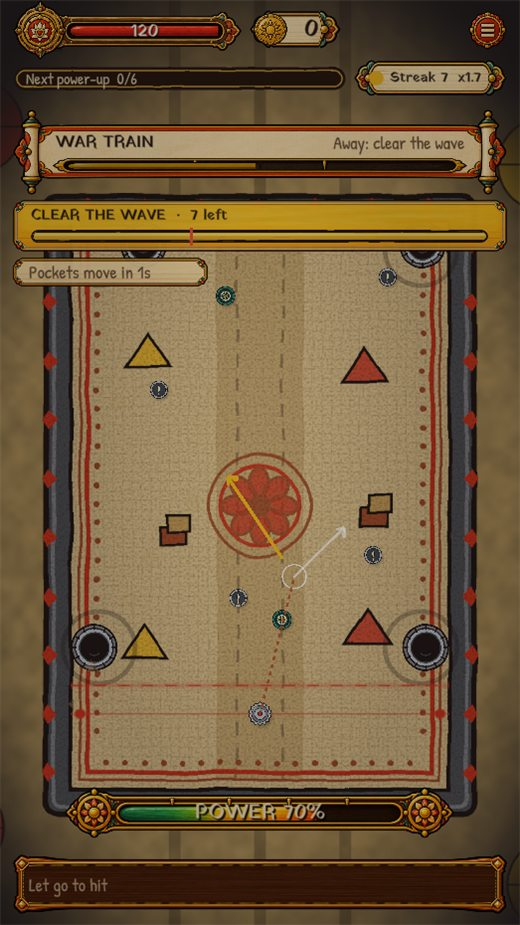
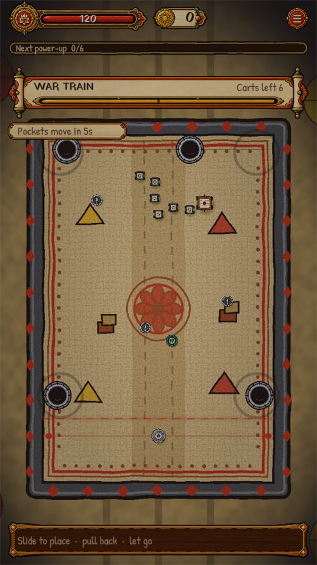
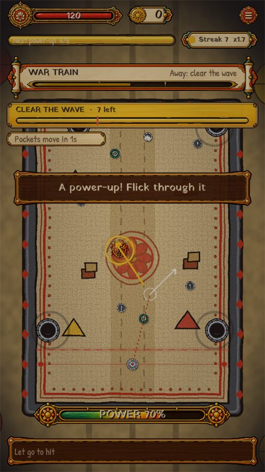
Carrom is played on kitchen tables, rooftops and verandas across South Asia. Everyone already knows the move: flick a heavy disc at a coin and watch it fall into a corner. I wanted that feeling, not a skin on top of it.
The aim was never to simulate carrom. It was to keep the exact thing that makes carrom satisfying and let everything else serve it.
Each zone is one fight. Halfway down its health bar a boss leaves the board and a wave marches in; clear most of it and the boss returns for the second half. When the bar is empty it glows, and a pocket sinks it.
Slow and very heavy. Every hard hit still counts, so keep shooting.
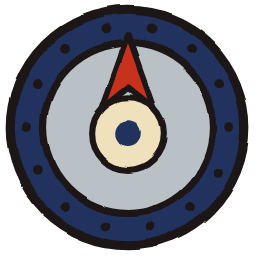
A turning ring with two openings. Plates chip him; a shot through a gap crits.
Six carts snake across the top. Every hit on a cart sheds it and hurts him.
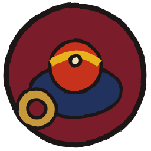
Fast and nimble on a tilted table. Hit him, not the runners that come down.
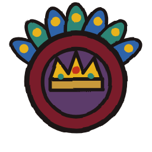
She sidesteps straight shots. Bank them off the rails to catch her.
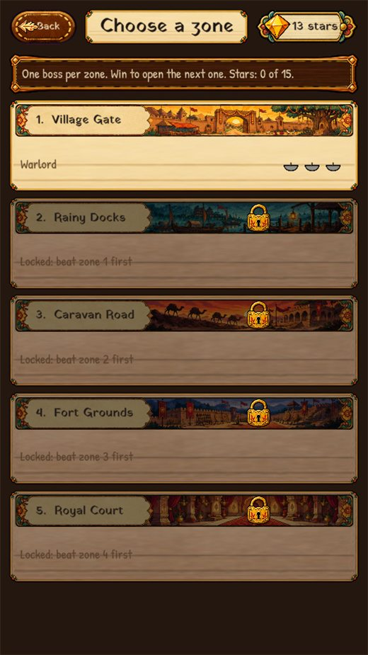
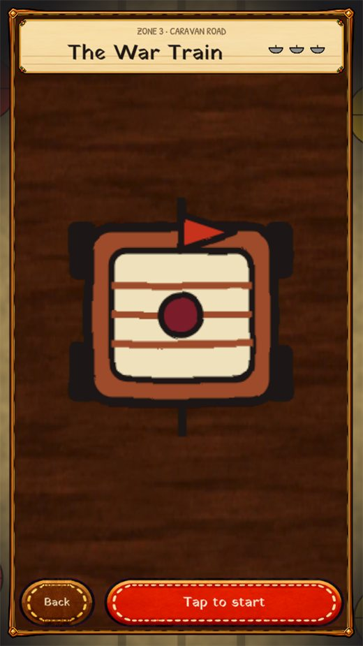
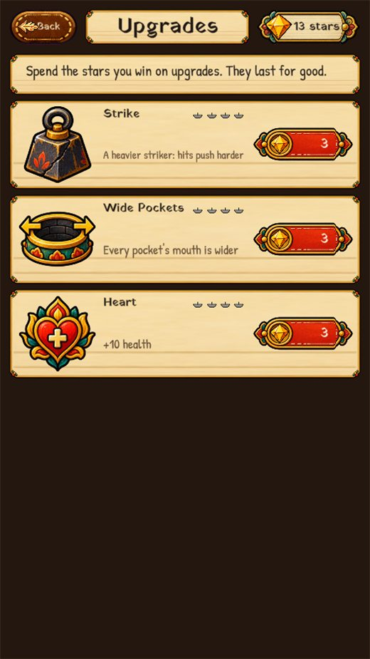
The game and this page share one art direction: hand-inked folk art on khadi cloth. Everything has a thick black ink outline, flat bright pigments, and a hard offset shadow, as if each piece were cut from painted paper and laid on the board.
Names are the traditional pigments, because the palette was chosen the way a folk painter would: a few earth and mineral colours, used flat.
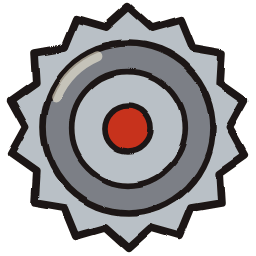
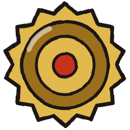
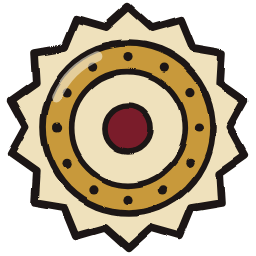
Iron, Brass, Steel, Spark and the Master's. Each is unlocked by a boss and changes how a flick behaves.
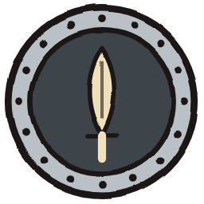
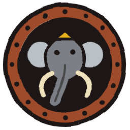
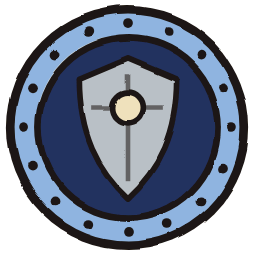
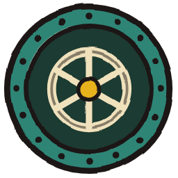
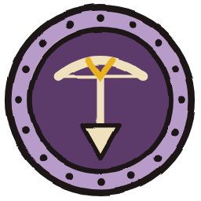
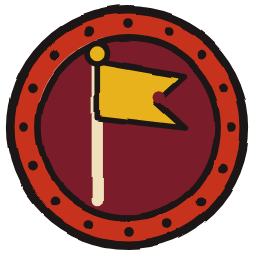
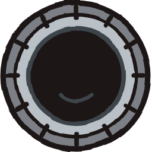
Six kinds of coin-soldier. Their silhouettes differ so you can tell a Brute from a Runner across the board.
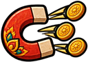
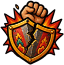
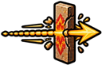
The game you can play now is not the game I started to make. It got here by subtraction: I kept the flick and cut nearly everything that was built around it.
The first design document described a build phase between waves where you placed bumpers, deflectors, magnets and mines, then a defend phase where you flicked. 50 levels, five boards, seven bosses, three-star ratings and a currency called Powder (after the boric powder carrom players dust on the board).
The building layer kept pulling attention away from the flick, and the flick was the thing people enjoyed. I removed towers and the build phase entirely: the striker became the only defence.
To give the fights some shape I added a roguelite layer: zones played as runs, abilities earned at pocket thresholds, a coins-to-gems economy and nine permanent upgrades.
Streaks you could lose, surges at the end of a wave, a danger beat when something was about to get through, and four enemies that fought back (a Bomber, a Thief, a Blocker and an Archer).
Placing the striker, setting the angle and hitting used to live in three places. I folded them into a single drag on the board, so the game could be played with one thumb.
I cut the wave stages and made it five bosses, one per zone. Bosses patrol the top half, fire telegraphed lanes, and send a wave down each time they lose a quarter of their health. Earlier bosses returned as echoes.
Testers kept telling me it was too hard. Over several rounds I made the boss retreat and come back when its wave was mostly cleared, made chains heal, cut the number of enemies by a quarter, gave the board more room, and added a short warm-up before each boss.
I listed every flaw I could find: difficulty that fell across a rush, a stack of healing that made late bosses toothless, abilities that never triggered in boss fights, and a coin economy nobody felt. Most of them had one cause: there were too many systems.
I decided the game should be extremely casual and cut to match. Fights last about 90 seconds. A foul costs a moment. Losing never loses progress: the boss remembers how far you got, and after two losses the next fight is quietly easier. Four enemy types, six upgrades, daily runs, echoes and the ability cards all went. One power-up pickup and three upgrades replaced them.
I wrote two bots that play the real physics. The decent bot aims at the coin closest to the line with a small error; the casual bot picks a random coin and aims badly and slowly. They are a floor for difficulty, not a ceiling, but they made it possible to retune a number and see its effect in minutes. After the casual pass the decent bot wins all five bosses in 56 to 145 seconds with 85% or more of its health left, and the casual bot wins them too.
Commuters, queues and breaks. A fight is about 90 seconds, you can play with one hand in portrait, and losing never costs you progress.
If you grew up flicking a striker on a family board, the controls are already in your hands. The game leans on that memory without needing you to know the rules.
If you like the little thrill of a good shot in games like Angry Birds, Peggle or pachinko, this is the same pleasure with a board you know.
Players who want deep strategy, long build orders or competitive ranking. Pocket Raja is deliberately small: three upgrades, nine power-ups, five bosses. I would rather it be a game you finish and enjoy than one you have to study.
Pocket Raja is designed for a phone: portrait, one thumb, short sessions. The browser version lets anyone try it with a link. The plan is to bring it to mobile as an app.
Portrait layout, a touch-first gesture, haptics on hits, and a UI sized for thumbs.
An Android build first, then iOS. Tuning on real devices, performance passes and store art.
More zones and strikers if players ask for them, and a gentle daily challenge once the core is proven.